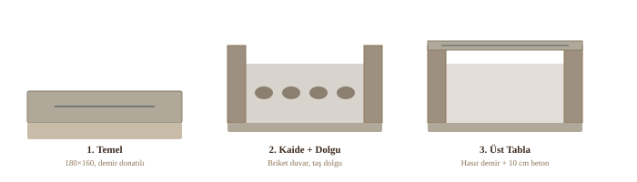
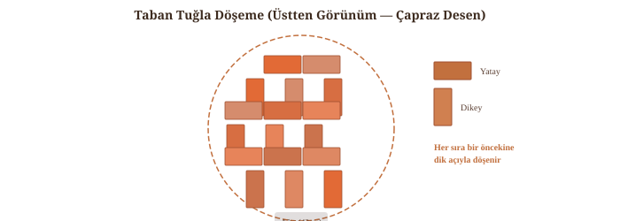
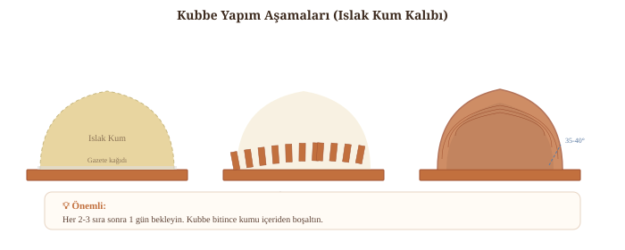
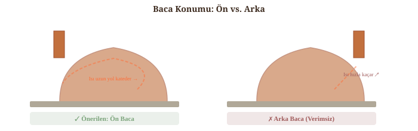
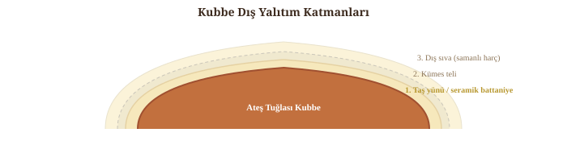

Yapım Aşamaları
1-3. Temel, Kaide ve Beton Tabla

Kaide Altı: Dolu mu, Açık mı?
Kaide iki şekilde yapılabilir:
A. Açık kaide (odunluk): 3 duvar + ön açık veya kemerli açıklık. Altında odun, kürek, kül kovası depolanır. Odun fırının ısısıyla kurumuş olur — her zaman elinizin altında kuru yakacak. Çoğu Forno Bravo planı bu yöntemi kullanır. Şart: Üst betonarme tabla minimum 9-10 cm kalınlıkta, 12 mm demir donatılı (25-30 cm aralıkla ızgara) olmalıdır — 90 cm fırın ~1.000-1.500 kg ağırlığındadır.
B. Dolu kaide: Duvarların içi taş, çakıl veya bims ile doldurulur. Yapısal olarak en sağlam, en kolay yöntem. Bims dolgu kullanılırsa ekstra yalıtım sağlar. Ancak depolama alanı yoktur.
Performans farkı: Açık kaidede dolgu yalıtımını kaybedersiniz ancak taban yalıtımı zaten betonarme tablanın üzerindedir (perlit harcı + cam kırığı + tuz). Alt tarafın açık veya dolu olması fırın performansını ölçülebilir şekilde etkilemez.
4. Yalıtım Katmanları
↑ "Taban Yalıtım Katmanları" diyagramına bakın. Sırasıyla: cam kırığı → tuz → perlit harcı (5:1 perlit:çimento) → ateş tuğlası. Kaide dolgusu olarak bims agrega idealdir — hafif ve iyi yalıtır. Vermikülit de kullanılabilir ancak perlit yerelde daha ucuz ve %6 daha etkilidir.
5. Taban Tuğlası Döşeme

6. Kubbe Örme

7. Baca Konumu ve Boyutu

8. Dış Yalıtım ve Sıva
Kubbe üzerine ilk kat: taş yünü veya seramik battaniye (1260°C). Üzerine kümes teli sarılır. Son katman olarak üç fazlı kompozit sıva önerilir:

9. Fırın Kapısı ve Kemer
Kapı, fırının ısı verimliliğini doğrudan etkileyen kritik bir bileşendir. İki farklı kapı ihtiyacı vardır:
A. Ateş Kapısı (Isıtma Sırasında)
Ateş yanarken hava akışını kontrol etmek için kullanılır. Alt kısmında havalandırma yarığı olan çelik kapı idealdir. Kapıyı asla tam kapatmayın — oksijen kesilirse, kapak açıldığında alev aniden patlar. Kapıyı her zaman eğik tutarak hava sirkülasyonuna izin verin.
B. Yalıtımlı Kapı (Pişirme ve Isı Tutma)
Ateş söndükten sonra ısıyı tutmak için fırın ağzının iç tarafındaki çıkıntıya (reveal) oturtulan yalıtımlı kapıdır. Kapı sızdırmaz olmalı — ısı ve buharı tamamen içeride tutar.
Kapı Yapım Seçenekleri (Forno Bravo Plans s.48-49)
Harç Tarifleri
⚠️ Portland Çimentosu Gerçeği
Portland çimentosundaki kalsiyum karbonat yüksek ısıda parçalanır ve toz haline gelir. Bu yüzden saf Portland harcı fırın içinde kullanılamaz.
Ancak Portland + ateş kili + kireç karışımında kireç (kalsiyum) sıcakta Portland'ın yerini alır ve harcı ayakta tutar. Bu yüzden bütçe formülü çalışır — ama gerçek refrakter harçtan daha az dayanıklıdır.
Kaynak: Forno Bravo High Heat Mortar Primer; NFPA-211; ASTM C-199; traditionaloven.com
🏆 EN İYİ: Kalsiyum Alüminat Refrakter Harç
Portland çimentosu İÇERMEZ. Isıyla güçlenir, su geçirmez, 930°C+ dayanımlı. Forno Bravo FB Mortar bu kategoridedir. Hızlı donar — küçük porsiyonlar halinde karıştırın. Asla tekrar su eklemeyin. Türkiye'de temin: Çimsa ISIDAC 40 (Mersin üretimi, Türkiye'nin tek yerli kalsiyum alüminat çimentosu). Normal yapı marketlerinde bulunmaz — Çimsa bayileri veya özel yapı malzemesi tedarikçilerinden temin edilir.
💰 BÜTÇE: Portland + Ateş Kili Harcı
Bağlayıcı Portland, katkı ateş kili. Sıcakta Portland yanar ama kireç yerini alır. Kabul edilebilir sonuç verir ancak gerçek refrakter harçtan daha az dayanıklı ve daha az ısı iletken. Ticari fırınlar için önerilmez.
YEREL PRATİK: Kalekim + Şamot
Anadolu ustalarının deneysel formülü. Kalekim'in polimer bağlayıcısı şamotla iyi tutunur. Akademik doğrulaması yok ancak saha deneyimleri olumlu.
🍕 TABAN MACUNU (Harçsız Zemin İçin)
ÇİMENTO YOK! Taban tuğlaları bu macun üzerine dişli mala ile döşenir, aralarına harç konmaz. Isı genleşmesine izin vermek için tuğlalar gevşek oturmalı.
🧱 PERLİT YALITIM HARCI (Taban)
Perlit yerelde bol ve ucuz, vermikülitten %6 daha iyi yalıtır (λ=0.045 W/mK). Sadece TABAN ALTINA — fırın iç yüzeyiyle temas etmez, Portland güvenlidir. Elle karıştırın (mikser perliti kırar). Yulaf ezmesi kıvamı. Alternatif: %50 perlit + %25 bims + %25 çimento (Kocaeli Üniv. optimum oranı).
🏠 Geleneksel Anadolu Harç Yöntemleri
Yukarıdaki tarifler modern/mühendislik yaklaşımıdır. Anadolu'da yüzyıllardır kullanılan geleneksel yöntemler de başarıyla çalışır:
Kil + Kum Harcı (En Basit)
Killi toprak + ince dere kumu (1:1). Su eklenerek macun kıvamına getirilir. Çimento yok. Yüksek sıcaklıkta kil sinterleşerek (pişerek) seramik bağ oluşturur. Binlerce yıldır kullanılan en temel yöntem.
Kil + Kaya Tuzu Harcı
Kil harcına kaya tuzu eklenir. Tuz, seramik biliminde flux (eritici) görevi görür — kilin daha düşük sıcaklıkta camsılaşmasını sağlar (Na₂O etkisi). Aynı kimya 14. yüzyıldan beri tuz sırı tekniğinde kullanılır. Uyarı: İlk yakmalarda HCl gazı çıkabilir, iyi havalandırın.
Samanlı Harç (Dış Sıva)
Kil + kum + saman. Saman lifleri "mini donatı" gibi çatlakları köprüler, kuruyan harcın çatlamasını önler. Sadece dış sıvada kullanılır — iç yüzeyde saman yanar. Geleneksel tandır ve kerpiç fırınların standart dış kaplaması.
Tandır Çamuru
İnce elenmiş killi toprak + saman + keçi kılı veya pamuk. Bir gün bekletilip ertesi gün tekrar yoğrulur. Katman katman örülür — bir seferde yapılırsa tandır çöker. İç yüzey taşla (loğun) düzleştirilir. Ömür: 5-10 yıl.
Kaynaklar: Evrim Ağacı (B. Tektan); Muallims Blog; Uğur Bolat Blog; Meyvelitepe Blog; Diyadinnet; Dekor Taşı; Aktaş Çini. Geleneksel yöntemler ateş tuğlası+şamot harcı kadar dayanıklı olmasa da, doğru uygulandığında yıllarca sorunsuz çalışır.
Killi Toprağı Nereden Bulur, Nasıl Ayırt Edersiniz?
Nerede bulunur: Dere/çay kenarlarının 30-50 cm altı (en temiz kaynak), yol yarmaları ve şev kenarlarındaki yapışkan sarı/kırmızı tabaka, bahçe/tarla 40-60 cm derinlik (üst humusun altı), inşaat kazıları (temel kazısından bedava çıkar), bölgenizdeki çömlekçi veya tuğla fabrikası.
Sosis testi: Islak topraktan parmak kalınlığında sosis yapın. İyi kil 15+ cm'de kırılmadan uzar. Zayıf kil 5 cm'de kırılır. Kum/silt sosis bile yapılamaz.
Parlama testi: Islak topağı tırnakla düzleştirin. Kil parlak/kaygan yüzey verir, kum mat kalır.
Kavanoz testi (en güvenilir): Kavanoza ⅓ toprak + ⅔ su koyun, çalkalayıp 24 saat bekletin. Alt: kum, orta: silt, üst: kil. Kil tabakası toplamın %30'undan fazlaysa harç için uygundur.
Kuruma testi: Kil topağını güneşte kurutun. İyi kil çok sert olur, tırnakla çizilemez ve çatlaklar oluşur. Zayıf kil kolay ufalanır.
Renk: Kırmızı/turuncu (demir oksit, en yaygın Anadolu kili), sarı/kahve (orta demir), gri/mavi (derin tabaka, çok saf), beyaz (kaolin, nadir). Hepsi harç için kullanılabilir — renk kaliteyi değil mineral içeriğini gösterir.
2. Standart duvarcı harcı (Portland+kum+kireç, ateş kili YOK) — ısıya dayanmaz.
3. Hazır ıslak şömine harcı (tüpte satılan) — suda çözünür bağlayıcı, dış fırın için uygun değil.
Kubbe Teknikleri
Üç yöntem:
Islak Kum Kalıbı
Yarım küre kum yığın, gazete kaplayın, üzerine örün. En kolay.
Strafor/Köpük Kanat Kalıbı
Forno Bravo yöntemi: ~8 köpük kanat (vane) profili korurken tuğlaların üzerinde durmaz.
Serbest Örme
Merkeze döner aparat. 35-40° açı. Deneyim gerektirir.